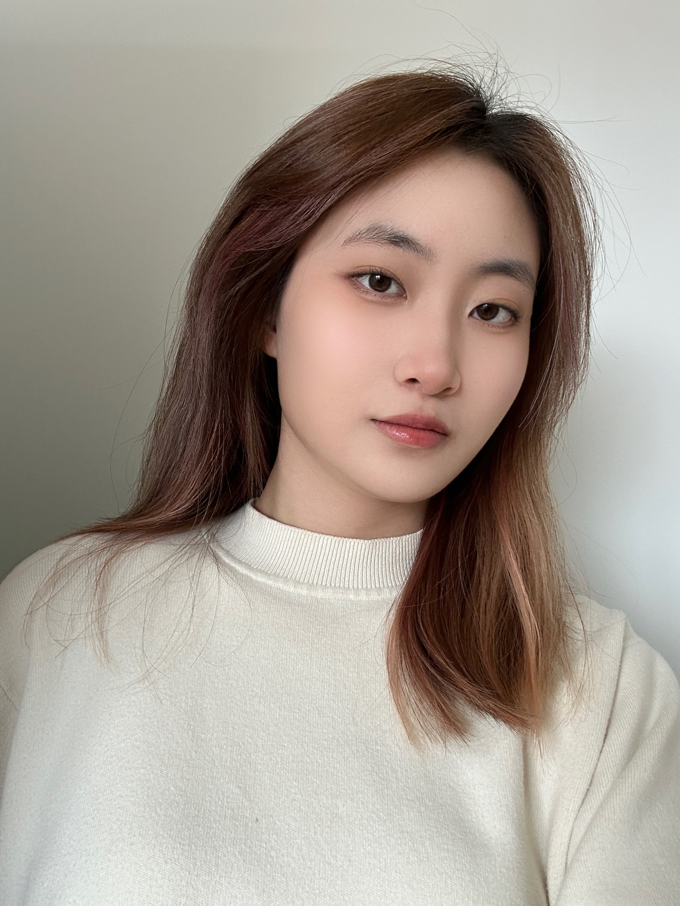

I'm Lucy Wang, a Communication Design sophomore at Parsons School of Design with a passion for visual storytelling, digital experimentation, and conceptual clarity.
I bring a cross-disciplinary foundation from fine arts to interaction design, supported by strong drawing skills and an eye for layout. I’m empathetic and analytical — I deeply understand client needs, organize feedback thoughtfully, and translate ideas into engaging experiences.
I’ve worked as a design educator since 2023, mentoring IB high school students through their art and design projects. From 2022–2024, I led branding and promotional design for Teen’s Key, a Hong Kong-based organization advocating for women’s freedom. I’m currently a member of AIGA New York, actively involved in promotional and event design at Parsons.
I’m fluent in English, Mandarin, and Cantonese and experienced in international team collaboration. I’m also highly proficient in tools like Photoshop, Illustrator, InDesign, Figma, and web design fundamentals like HTML & CSS.
I’m driven by curiosity and designed to challenge — let’s build something meaningful together.